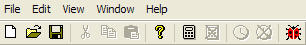

PIX Main Menu Commands
The main menu bar that appears at the top of the PIX window contains the following menus:

File
The File menu has the following commands:
- Record
- Starts recording a title's push-buffer and timing data from the default Xbox. For this to work, there must be a debug or profile version of the title running on the Xbox console. The shortcut key for this menu item is CTRL+R.
- Open
- Opens an existing PIX (.pix) file. The shortcut key for this menu item is CTRL+O.
- Close
- Closes the active PIX (.pix) file.
- Save
- Saves all the collected data in the current PIX (.pix) file. The shortcut key for this menu item is CTRL+S.
- Save As
- Saves the collected data in the current PIX (.pix) file with a different file name.
- Export .CSV File
- Exports the collected data in the current PIX (.pix) file to an Excel .csv file.
- Export .CSV File with Hierarchy
- Exports the collected data and the event hierarchy in the current PIX (.pix) file to an Excel .csv file.
- Begin Analysis
- Starts running the PIX analysis application on the Xbox console. The shortcut key for this menu item is CTRL+B.
- End Analysis
- Stops running the PIX analysis application on the Xbox console. The shortcut key for this menu item is CTRL+E.
- Discard Calculated Data
- Deletes all of data and warnings generated by the PIX analysis application running on the Xbox console. The shortcut key for this menu item is CTRL+Q.
- Show Realtime Display
- Starts a real-time timing capture of the application currently running on the default Xbox console. The shortcut key for this menu item is CTRL+J. For more details, see Real-time Timing Sampler.
- Hide Realtime Display
- Hides the real-time timing capture of the application currently running on the default Xbox console. The shortcut key for this menu item is CTRL+H.
- Choose Target Xbox
- Opens a dialog box from which you can choose the Xbox for profiling. This
command also enables you to set the default Xbox for all tools.
- Start Debugger
- Starts the GPU Debugger.
- Exit
- Closes PIX.
Edit
None of the items in the Edit menu are currently supported.
View
The View menu has the following commands:
- Toolbar
- Toggles the main toolbar.
- Status Bar
- Toggles the status bar.
Window
The Window menu has the following commands:
- Cascade
- Cascades the windows.
- Tile
- Tiles the windows vertically.
- Arrange Icons
- Allows the user to arrange the windows however he or she wants.
- Default Arrangement
- Restores the windows to the default arrangement.
Help
The Help menu has the following commands:
- Help with Performance Investigator for Xbox
- Launches the online help for PIX.
- About Performance Investigator for Xbox
- Displays the PIX version and copyright information.